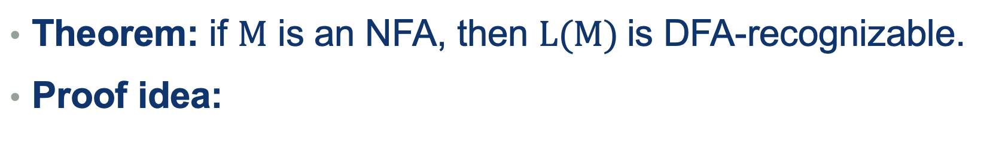
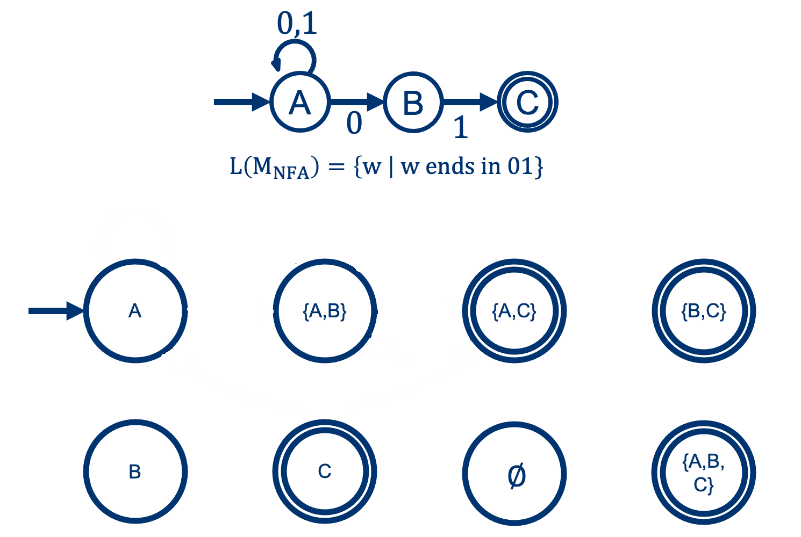
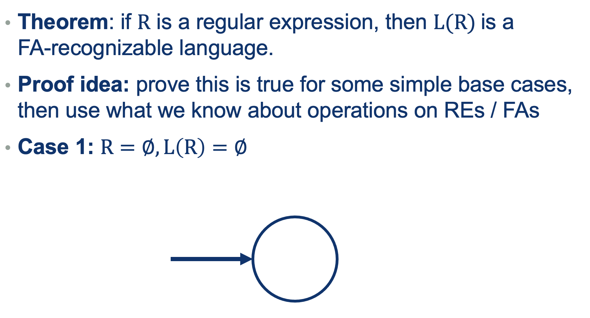
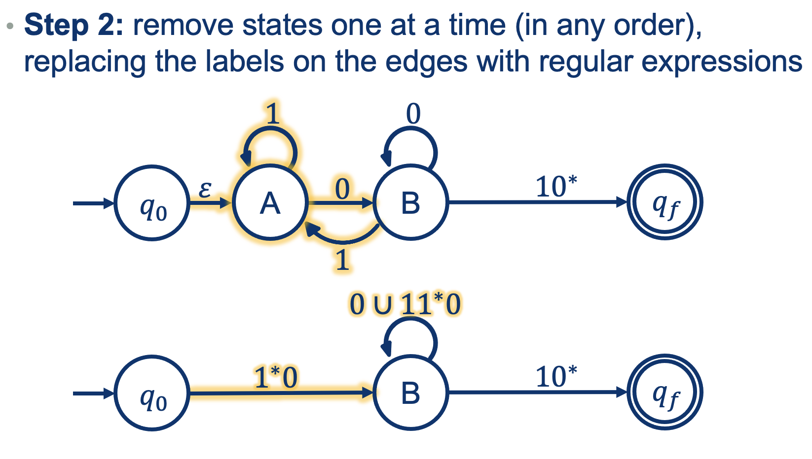
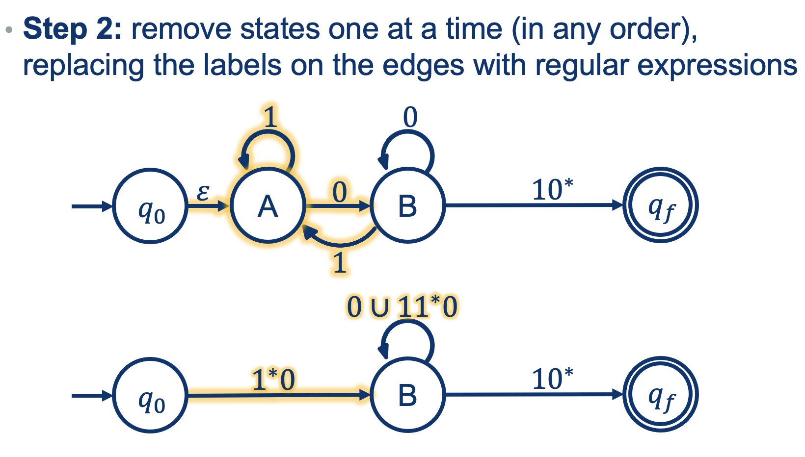

Lecture Notes 06:
Recap and Review: DFAs, NFAs, and REs
Outline
This class we'll discuss:
- Recap: DFA-NFA equivalence
Recap: DFA-NFA equivalence
Last lecture we asked the question: Are NFAs stronger than DFAs?
We made the following claim:
NFAs and DFAs are equally powerful!

The proof approach was by construction (in two steps):
What we know: \(M_{NFA}=(Q,\Sigma,\delta, q_0, F)\)
- Need to construct: \(M_{DFA}=(Q^\prime,\Sigma,\delta^\prime, q_0^\prime, F^\prime)\) that recognizes L(M)
- Prove that \( L(M_{DFA}) = L(M_{NFA}) \)
Step 1: Building the equivalent \(M_{DFA}\)
We need to make the 5-tuple for the DFA equivalent to out NFA:
From NFA to DFA: the states \(Q \rightarrow Q^\prime \)
It’s possible that in an NFA, we could be in multiple states at each step. If we want to emulate the NFA’s behavior, we’ll have to have a state for each combination.

From NFA to DFA: the Start states \(q_0 \rightarrow q_0^\prime\)

(In this case, only \(A\))
From NFA to DFA: the Accepting states \(F \rightarrow F^\prime\)

(In this case, \( \{ C, AC, BC, ABC \} \))
From NFA to DFA: the Transitions \(\delta \rightarrow \delta^\prime\)
At each symbol reading, if there are multiple paths to follow, we want to jump the the single state (in the DFA) that is the
Union of all the possible destination states (in the NFA) for that symbol.
This can be expressed like this:
\[
\begin{alignat}{2}
&\delta^\prime ( q, \mathit{a} ) = \bigcup\limits_{p\in q} \delta(\mathit{p}, a) \\
&\qquad \text{ where $q \in Q^\prime$; $a \in \Sigma$} \\
&\qquad \text{ and $q$ can be a set of states from $Q$}
\end{alignat}
\]
Let's see it in action.
Example: building the DFA for this NFA

Solution:
Step2: Prove \(L(M_{DFA}) = L(M_{NFA}) \):

Hint:
To prove that L(DFA) = L(NFA), use induction to show that the result of running the DFA on a word \(w\) (denoted \( \hat{\delta}^\prime(q_0^{\prime} , w))\) is equivalent to the result of running the NFA on the same word [denoted \(\hat{\delta}(q_0, w)\)] for every word \(w \in \Sigma^*\).
Note: : this will be exercise 5 on assignment 3!
We'll see a review on induction at the end of today's class.
FAs Vs REs
Where do FA-Recognizable Languages stand with respect to Regular Languages?

Where are FA-recognizable languageswith respect to Regular Languages?
Try Proving: FAs are at least as powerful as REs
We can use the same approach as we did when defining REs (a recursive definition out of base cases).



So What did we prove?

NOW, Try Proving: REs are at least as powerful as FAs
Proof Idea:
convert the FA that recognizes L into a RE
Step 1: modify the FA so that
- the start state doesn’t consume any letters
- there is only one final state
- the final state doesn’t consume any letters





So What did we prove?

A Primer on Induction
Induction is an approach to proving a statement about a pattern \(P\) or law involving an infinite number of cases
(one for some input numner of elements): \( P(0), P(1), \dots , P(k), P(k+1), \dots \)
This is done in three steps:
- The rule works for a base case, usually \( P(0) \), or \( P(1) \)
- Asume the rule is valid for some intermediate case \( P(k)\)
- Prove it works for the next case: \( P(k+1) \)
Example
Prove that \(1+2+3 \dots + n = \frac{n(n+1)}{2}\)
- Base case [n=1]: \( 1 = \frac{k(k+1)}{2} = \frac{1(1+1)}{2} = \frac{(2)}{2} =1 \qquad \checkmark\)
- Asume this is true for some [n=k]: \( 1+2+\dots+k = \frac{k(k+1)}{2} \qquad \checkmark\) (OK, sure)
- Inductive step \(\rightarrow \) show that if step (2) holds, then it holds for [n=k+1]:
\[
\begin{alignat}{2}
\text{if } 1+2+\dots+k &= \frac{k(k+1)}{2}\text{, then} \\
1+2+\dots+k+(k+1) &= \frac{k(k+1)}{2} + (k+1) \\
&= \frac{k(k+1) + 2(k+1)}{2}\\
&= \frac{(k+1)(k+2)}{2}\\
&= \frac{(k+1)((k+1)+1)}{2} \qquad \square
\end{alignat}
\]
Read the following
Guide to Induction for a deeper dive into the steps.
Next class: What lives outside that set of languages?
Before next class (Wednesday 09/27)
[Due for everyone]
Remember: Problem Set 2 (Moodle) [Due Friday 10/01] Go to OHs if you're stuck!
[Optional]
TODO